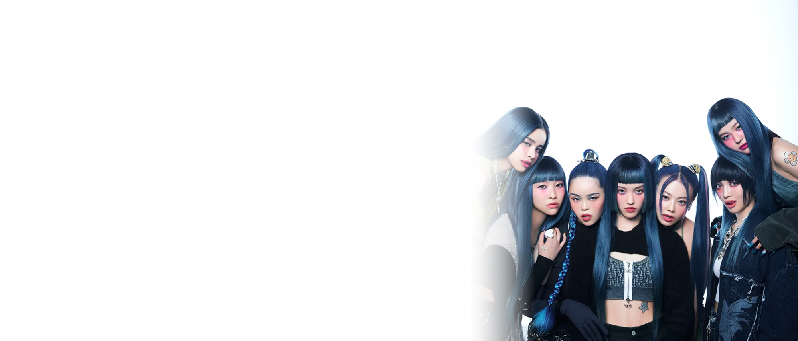
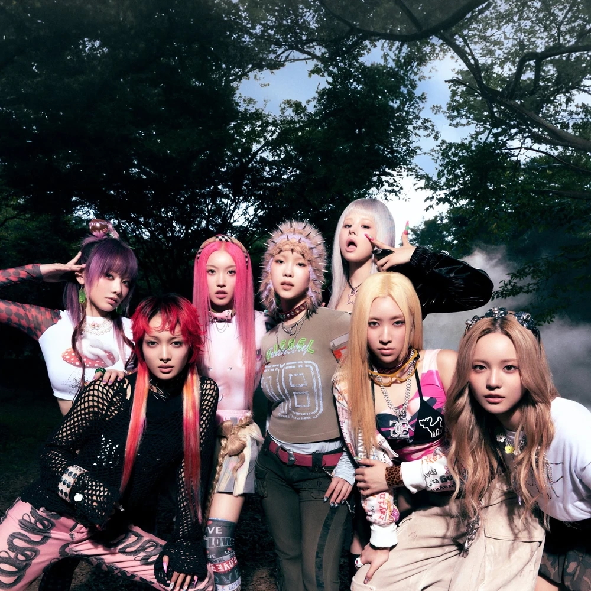
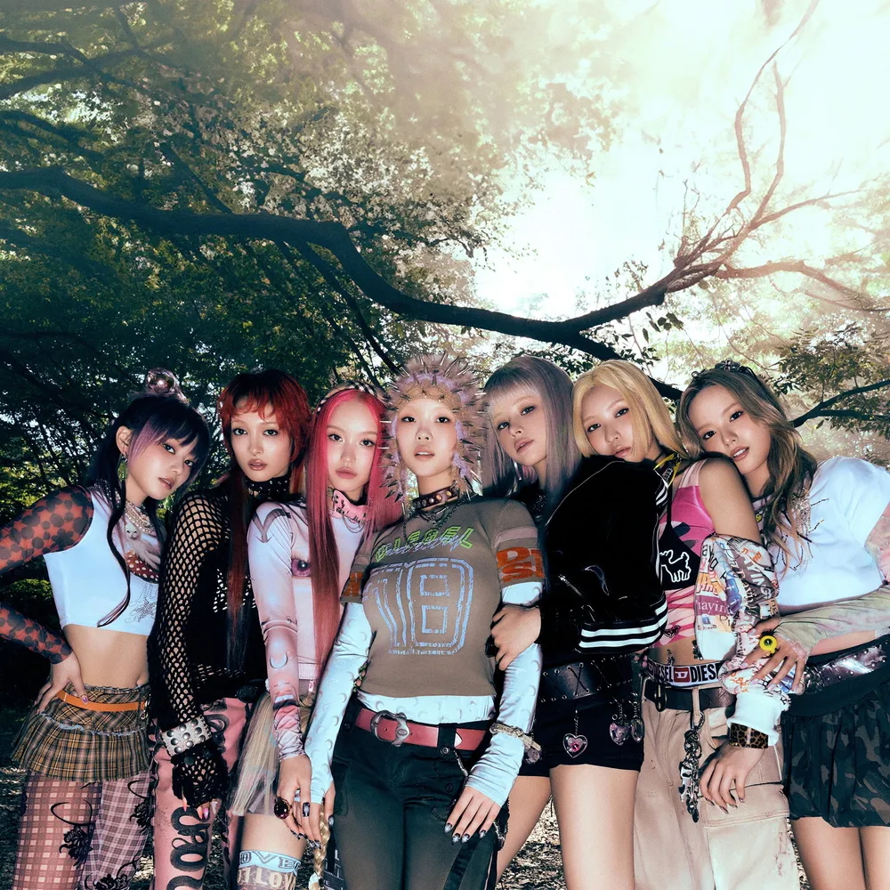

개러지
개러지는 130BPM 정도로 이루어져 있는 4/4박자 비트에 엇박 느낌의 여러 사운드를 넣어 만든 음악을 말한다. 좋은 환경과 능력을 갖추지 않아도 충분히 멋진 음악을 할 수 있다는 DIY 정신을 담은 장르이다. uk 개러지, 덥스텝, 퓨처 개러지, 스피드 개러지 등으로 발전했다.
아티스트

XG
XG는 2022년 데뷔한 7인조 걸그룹이다.
걸그룹이 흔히 하는 장르를 다루지 않고 보지 못한 콘셉트와 음악을 전개해 그들만의 길을 만들어 간다. 노래를 들으면 걸그룹 노래가 맞는지 생각이 들 정도로 세련되고 유니크하다. 요즘에는 덥스텝 등 개러지 장르 위주의 노래를 발매하고 있다.

BEBE YANA
베이비 야나는 2017년 데뷔한 한국의 R&B 싱어송라이터이다.
데뷔 초반에는 R&B 장르를 주로 다뤘지만, 2021년 싱글 '딸기키스'를 통해 uk 개러지 장르 음원을 처음 발매했다. 국내에서 흔하지 않았던 uk 개러지 장르가 좋은 반응을 얻으니 이후 uk 개러지 장르의 음악을 꾸준히 하고 있다. 현재는 유럽에서 많은 인기를 얻고 있다.
iiso
이소는 2022년 데뷔한 한국의 여성 싱어송라이터이다.
테크노, 개러지 장르의 일렉트로닉 음악을 기반으로 독특한 음악세계를 펼친다. 이소의 독특한 음악세계만큼 음색도 정말 독특하다.
허스키하면서도 얇은 유니크한 음색. 이소만이 낼 수 있는 목소리다. 발매곡 중 uk 개러지 비트의 Salad Days라는 곡이 제일 유명하다.
음악

IYKYK
XG
SATELLITE
BEBE YANA

Salad Days
iiso